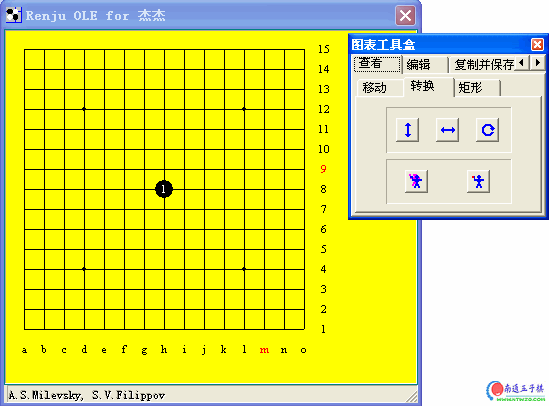

棋谱制作软件：renju OLE server
#1 棋谱制作软件：renju OLE server 作者：有志青年 发表时间：2007-3-6 10:59:25
（专业的出版物都用此工具制作棋谱）
renju OLE server
从renbase提取出来的棋谱制图工具，除动态棋谱之外，最专业好用的bmp,jpg图片制作工具。很多连珠网站使用它来制作静态的打谱图。简单地汉化了一下。有些翻译的不是很好，有极少量的ASCII没有翻译到，毕竟不太熟悉这玩意。"miscellanea"不属于D类字体很难汉化的问题，已经解决。
由汉化新世纪YWL提供技术支持。
(双击界面打开图表工具箱）

#2 Re:棋谱制作软件：renju OLE server 作者：无尽 发表时间：2007-3-6 13:33:46
一个不好的地方是黑棋只能标记单数，白棋只能标记双数，或者是我没发现其他方法？#3 Re:棋谱制作软件：renju OLE server 作者：集通 发表时间：2007-3-6 16:23:41
试试
#4 Re:棋谱制作软件：renju OLE server 作者：嗯嗯嗯 发表时间：2009-10-27 9:05:28
图表工具盒没有啊？
#5 Re:棋谱制作软件：renju OLE server 作者：uniwin 发表时间：2009-11-4 10:44:41
回复4楼的，双击主界面黄色部分，即可调出“图表工具盒”！
小丸的“五子妙手2009SP3”也提供了导出这种带有坐标的部分图片的功能，今天试用了一下，发现还是“renju OLE server ”做出来的图片更加精美一些。
 五子妙手2009SP3导出的图片与“renju OLE server”导出的图片对比.rar
五子妙手2009SP3导出的图片与“renju OLE server”导出的图片对比.rar
图片样式参见ShowPost.asp?PageIndex=6&ThreadID=7726 56楼，盼望爱五子棋打谱软件也能提供这种漂亮的图片的导出功能。

#6 Re:棋谱制作软件：renju OLE server 作者：杰 发表时间：2009-11-8 23:14:58
回来怀旧一下，看一眼就走。#7 Re:棋谱制作软件：renju OLE server 作者：uniwin 发表时间：2009-11-10 23:24:40
楼上的，这个软件是你汉化的不是？！
如果是的，麻烦更进一步把它的源代码什么的给弄出来，以便于把该功能加到“爱五子棋打谱软件”中，岂不好哉！！
#8 Re:棋谱制作软件：renju OLE server 作者：业余九级菜手 发表时间：2010-3-6 15:42:19
我下载后，感觉做起来太麻烦，不如破解文件来的快。

哪位大师有破解文件啊？
发上来看看！